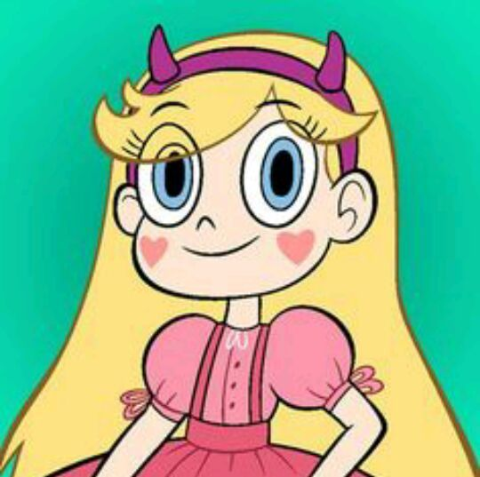
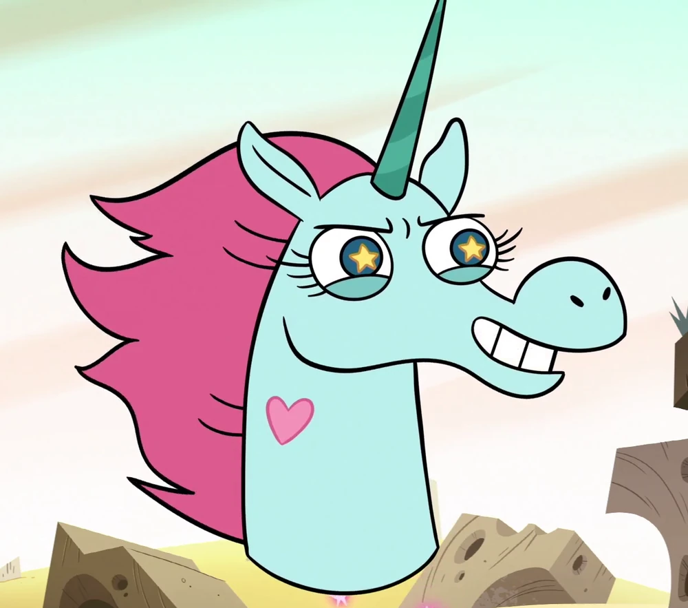
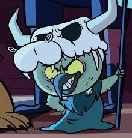
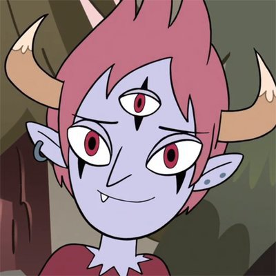

Tabela de personagens
Alexandre Marconato (2ª voz)


Sinopse: Star Butterfly é uma princesa que vive em outra dimensão de Mewni e herdeira do trono real de Mewni. De acordo com a tradição, ele recebe a varinha mágica real quando faz 14 anos . Depois que ele acidentalmente incendeia o castelo da família, seus pais King River e Queen Moon decidem que uma opção mais segura é mandá-la para a Terra como estudante de intercâmbio, para que ela possa continuar seu treinamento de uma princesa. Ele faz amizade com Marco Diaz e vive com sua família enquanto frequentava a Echo Creek Academy. Indo em uma série de desventuras usando "tesouras dimensionais" que podem abrir portais, Star e Marco devem lidar com a vida escolar diária enquanto protegem a Varinha mágica real de cair nas mãos de Ludo, um vilão de Mewni que comanda um grupo de monstros. Star enfrenta vilões mais sérios como Toffee e Meteora enquanto descobre o mistério por trás de sua real rainha Eclipsa como conhecido como a sua ajudante da Família.
Estreia no Brasil: 14 de setembro de 2015
Fim no Brasil: 24 de abril de 2020
Gênero: Desenho Animado · Aventura · Comédia · Fantasia científica
Temporadas/Episodios: 4 Temporadas - 77 Episodios - Mais detalhes sobre cada episodio
Duração: 30,8 horas
Tabela de personagens |
|||
|---|---|---|---|
| Nome da personagem | Dublador pt-br | Descrição da personagem | Imagem da personagem |
| Star Butterfly | Gabriela Milani | Uma princesa do reino Mewni enviada para terra quando faz 14 anos para treinar sua mágica em uma dimensão mais segura que Mewni. |  |
| Marco Diaz | Daniel Figueira | Ele é um estudante normal, amigo de Star e luta contra monstros ao lado dela no caso deles virem para a Terra. | |
| Cabeça Pônei | Flora Paulita | Uma princesa unicórnio, ela é uma das melhores amigas de Star e estuda na escola do Reformatório Santa Olga para princesas malcriadas. |  |
| Ludo Avarius | Marcelo Salsicha | Vilão da primeira temporada o inimigo de Star que planejou roubar a varinha mágica para ter o controle total do Universo. |  |
| Tom Lucitor | Bruno Marçal | Meio-demônio príncipe do submundo e ex-namorado da Star. Foi considerado um dos principais antagonistas da série aonde tinha uma rivalidade com Marco |  |
| Toffee | Luíz Laffey (1ª voz) Alexandre Marconato (2ª voz) |
Foi um membro recente do Exército de Ludo e um "especialista em eficiência má" que parece ter segundas intenções. Ele se torna o líder do exército após usurpar a posição de Ludo | |
| Jackie Lynn Thomas | Agatha Paulita | Estudante da Echo Creek Academy. Marco tem uma queda por ela no início da série, da qual ela é informada em "Festa do Pijama", e os dois têm um relacionamento romântico | |
| Eclipsa Butterfly | Mabel Cezar | Rainha da Escuridão, é uma antiga governante do Reino de Mewni e Nona bisavó de Star Butterfly | |